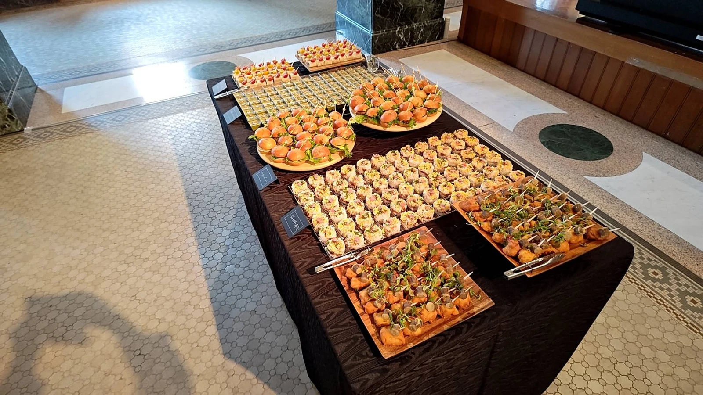
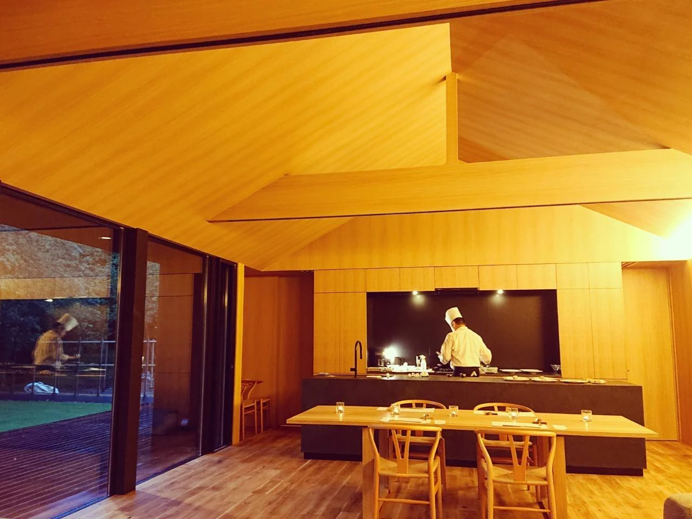
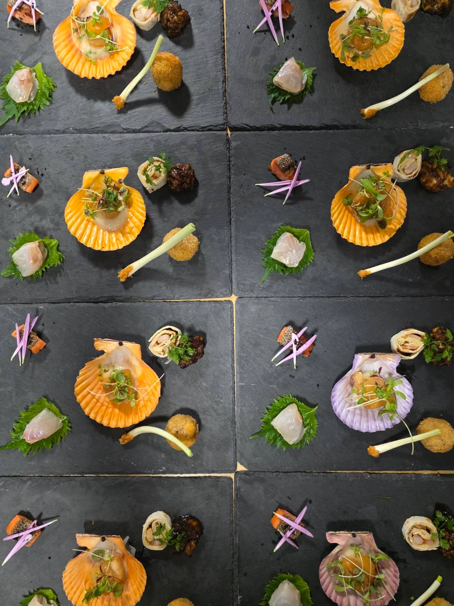
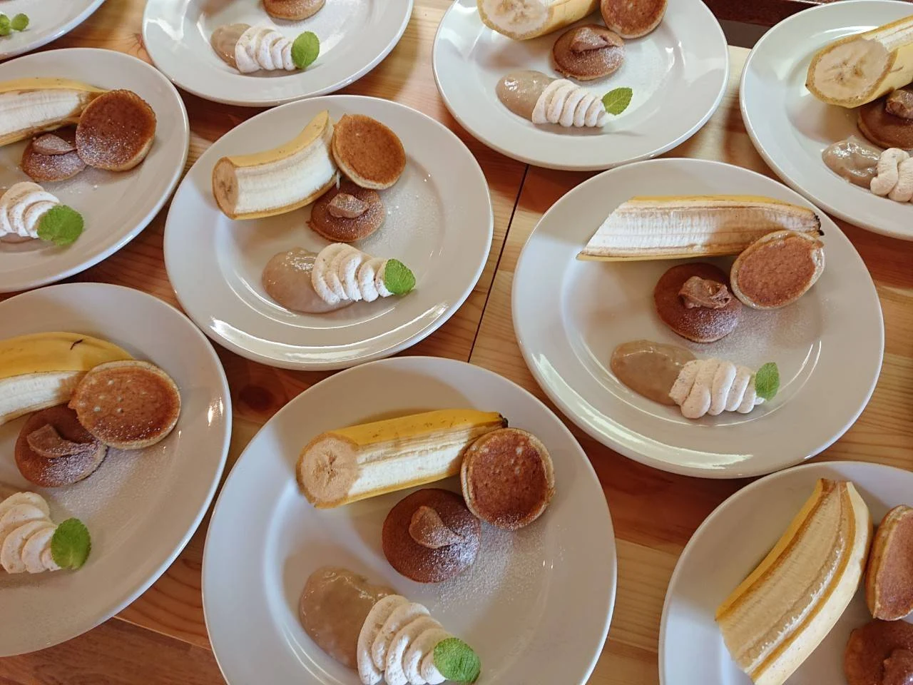

01 / CORPORATE
Corporate gatherings
Food that invites conversation, planned around the purpose and wishes of your event.
The food, the setting, the time you share. From corporate parties and weddings to a course meal at a villa, our catering is shaped around your occasion.

Every booking is individually customised. Tell us about the location, guest numbers, budget and the time you hope to create. Cooking in front of your guests is also a style we can discuss.

Food that invites conversation, planned around the purpose and wishes of your event.

A table shared with the people you love, shaped around the two of you.

A chef-prepared meal in a place where you feel at home. Tell us about your preferred setting.


Call to discuss the date, location, guest numbers and budget.
We discuss the food, service style, travel expenses and other arrangements individually.
On the day, we bring the agreed dining experience to your setting.
RESERVATIONS & ENQUIRIES
+81 90-6474-6012The restaurant is by reservation only. Please book by the day before your visit.
Visit & contact